![]()
Illustration by Allison Horst
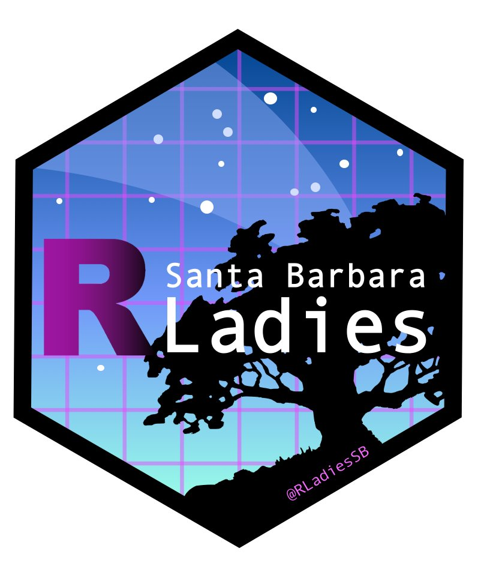
R-Ladies Santa Barbara Meetup
This document is based on teaching material originally developed for the Bren School of Environmental Science & Management’s Master of Environmental Data Science (MEDS) program. It combines content from three longer-form workshops – Creating your personal website using Quarto, Customizing Quarto websites, and Adding a blog to your existing Quarto website – and covers creating a personal website using Quarto, adding a blog, customizing colors & fonts using Sass, and deploying (for free!) using GitHub Pages. Check out the original workshops for additional details and examples.

To follow along, you’ll need:
You should already have git on your device, but let’s check for it anyway. Open your IDE and run the following in the Terminal (choose the option for your operating system):
Terminal
which gitTerminal
where gitIf you get something that looks like a file path to git on your computer (e.g. /usr/local/bin/git on a Mac, C:\Program Files\Git\mingw64\bin\git.exe on Windows, though it could differ slightly on your computer), then you have git installed. If you instead get no response at all, you should download & install git here: git-scm.com/downloads
Run the following commands (by pressing enter / return after each line) in your IDE’s Terminal. Be sure to replace the username (keep the quotation marks) with your GitHub username and the email with the email you used for your GitHub account.
Terminal
git config --global user.name "Jane Doe"
git config --global user.email janedoe@example.comThen, in the Terminal run the following, and carefully check that the name and email returned match your GitHub information:
Terminal
git config --list --globalFirst: What even is a personal access token? From GitHub’s documentation:
Personal access tokens (PATs) are an alternative to using passwords for authentication to GitHub when using the GitHub API or the command line.
This means that in order to push your work (files, scripts, etc.) from your laptop (or any other computer) to GitHub, you’ll need to first to generate a PAT. Importantly, you’ll need to generate a PAT for each computer you wish to work from. For example, we will complete the following steps to create a PAT for your personal laptop, but you’ll also need to create a PAT if/when you choose to work on a second computer at home or on a server, etc. Good news is that you can follow these same steps when you’re ready to set up additional PATs on other machines. For now, let’s get a PAT for our personal laptop squared away:
{usethis} package in R by running the following in your Console:Console
install.packages(“usethis”)Console
usethis::create_github_token() 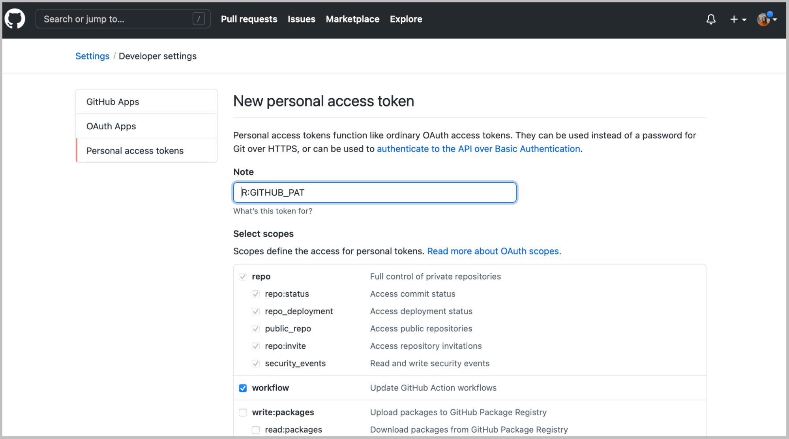
Add a note in the Note field to describe which machine this PAT is being used for. For example, if you are generating a PAT for your laptop, you might choose to name it, My Personal Laptop.
Next, you’ll see a section called Select scopes with reasonable options already selected for you. You don’t need change anything. Scroll down to the bottom of that page and click the green Generate token button:

Copy the generated PAT to your clipboard
Head back to your IDE and run the following in the Console:
Console
gitcreds::gitcreds_set()This will prompt you to paste the PAT you just copied from GitHub. Press return / enter to run. You should see something like this show up if all is well so far (you’ll have pasted your PAT where the example below says “REDACTED”):

Console
usethis::git_sitrep()Does it return information about your connected GitHub account that looks something like below? Great! You’ve configured git and successfully stored your PAT.
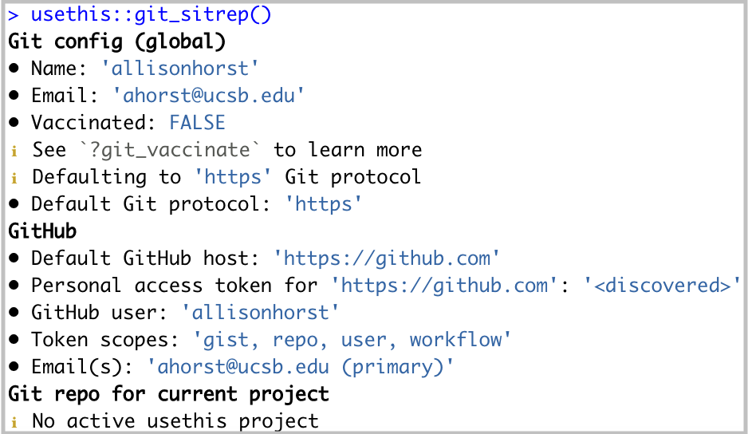
Note: Setting an expiration date on personal access tokens is recommended in order to keep your information secure. GitHub will send you an email when it’s time to regenerate a token that’s about to expire. Follow the email prompts, then use gitcreds::gitcreds_set() to reset your token.
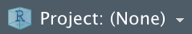
button in the top right corner. Select New Project…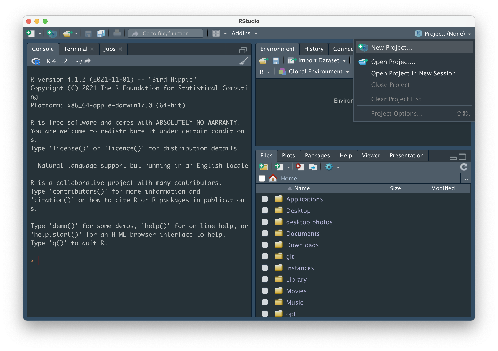
Choose New Directory, then Quarto Website.
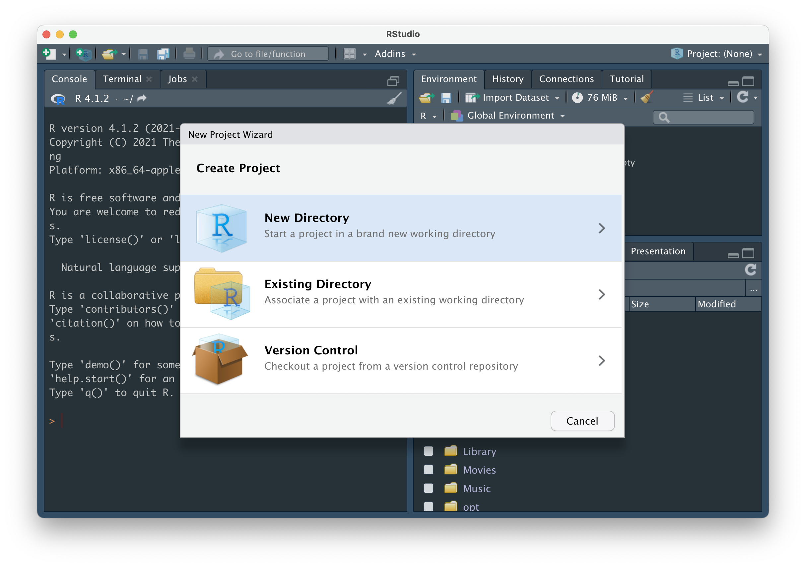
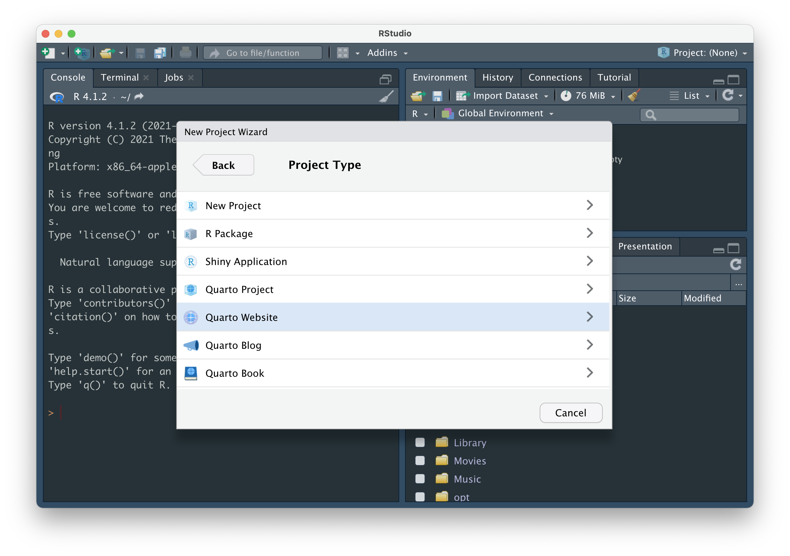
And finally, fill out the Directory name: field – this is the name of your R project, and will eventually become your remote (i.e. GitHub) repository name (Important: see note below re: naming!) – and choose where to save your directory to using the Browse button. I also recommend unchecking the Use visual markdown editor box, if selected (this just means you’re project will open with the Source editor, but you’ll still be able to toggle to the Visual editor, if desired). Click Create Project.
yourGitHubUsername.github.io if you plan to deploy using GitHub pages
Because we’ll be using GitHub pages to publish / host our websites, it’s recommended that you name your project yourGitHubUsername.github.io (you’re allowed one user website with the github.io suffix) – for example, the project / GitHub repository, which contains the code for my personal website, is named samanthacsik.github.io. Otherwise, name it something reasonable (this will become the slug for your site if publishing with GitHub pages, so choose carefully). I’m calling my project mysite just for tutorial purposes only – you should definitely give yours a more practical / creative name.
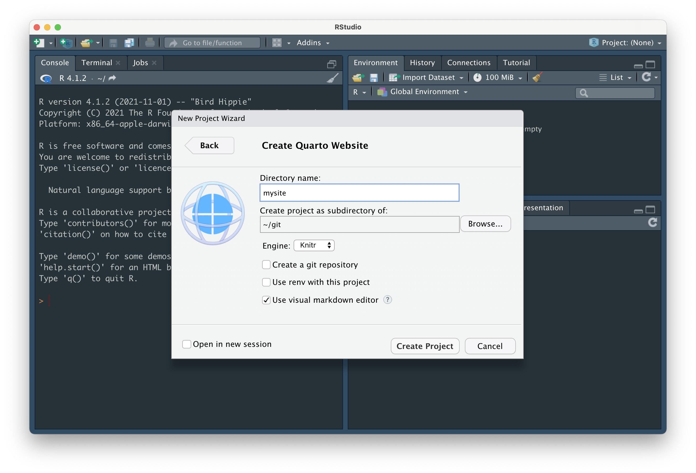
You should now see a folder called mysite (or whatever you named your Quarto project) with a series of files (_quarto.yml, about.qmd, index.qmd, styles.css) that provide the scaffolding for your website in the Files tab (in the bottom right panel in RStudio, if you haven’t altered the pane layout).
When you create a new Quarto website, a handful of files are generated by default:
index.qmd renders your website’s landing page. Whatever you add to this file will be the first content visitors see when they visit your site. Update the content of index.qmd (or any other website page) using markdown and / or HTML (you can mix and match both on the same page), add and execute code chunks and embed outputs, etc. Importantly, do not change the name of index.qmd – this is the default / expected name given to website landing / home pages. If you change the name of this file, you risk breaking your (eventual) deployment.
about.qmd is a regular ’ole website page. You’re able to change both the name of this file (e.g. change about.qmd to my-new-name.qmd) and / or the title of the file by updating its YAML – by default, the YAML only includes a title:
about.qmd
---
title: "About"
---.qmd file and is denoted by a pair of “gates”, ---._quarto.yml is your website configuration file. Any document rendered within your project directory will automatically inherit the metadata defined in this project-level configuration file (though you can control metadata on a page-by-page basis by making edits to an individual page’s YAML, which will override any options specified in _quarto.yml). Importantly, this is where you define your website’s structure (e.g. your navbar, sidebar, footer, etc.). By default, your file should look similar to this:_quarto.yml
project:
type: website
website:
title: "mysite"
navbar:
left:
- href: index.qmd
text: Home
- about.qmd
format:
html:
theme: cosmo
css: styles.css
toc: truestyles.css is a stylesheet, where you can write CSS rules to alter the appearance of your website. We’ll actually create and use a different type of stylesheet (called a “sassy css file”, .scss) in just a little bit.The following will appear after we preview our website and initialize our project as a git repository
The _site/ directory is where all of your rendered HTML (and other important) files live. When you render or preview your site (we’ll do this in the next step!), Quarto takes all of your .qmd files and converts them to .html files, and saves them to this folder (which is important because web browsers don’t know how to read .qmd files, but do know how to read .html files). We’re actually going to change the name of this folder once we configure our website for deployment, but _site is the default name that Quarto uses (we can leave as-is, for now). You don’t want to physically edit or move any files inside this directory (if you want to make a change to your website, update the .qmd or _quarto.yml file, then re-render).
.gitignore is a place where we can specify any files that we don’t want Git to track (i.e. that we want Git to ignore). This is not a “Quarto thing,” but rather a valuable file that lives inside git directories. One common use is to add any large data files that you don’t want to accidentally push to GitHub (GitHub isn’t designed to handle LARGE files).
Terminal
quarto previewCtrl + C.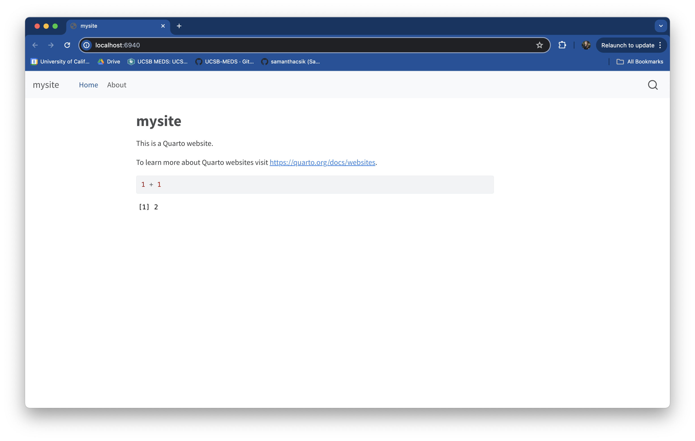
quarto preview makes it easy to quickly view iterative changes
Running quarto preview launches a preview of your website in a browser window. So long as you leave the preview running, it will update each time you make and save changes to website files (which makes iterating on your work really easy!).
{usethis} package, if necessary. At this point you’ve created a directory (folder) with the website scaffolding files, but it’s not yet being tracked by git, nor is it connected to a remote repository on GitHub. We can use the {usethis} package to help us set this up. First, install the {usethis} package (if you don’t already have it). Do so by running the following in your console:Console
install.packages("usethis"){usethis} is an R package that facilitates interactive workflows for project creation and development
We’re using the {usethis} workflow here because it provides a lot of really helpful tooling (learn more in the documentation), including a couple wrapper functions to execute git commands – in other words, we’ll use some familiar-feeling R functions provided by {usethis} to execute some Git commands, rather than running those Git commands in the Terminal.
usethis::use_git(): To create a local git repository, run the following in your Console:Console
usethis::use_git()Choose yes when asked if it’s okay to commit any uncommitted files. If asked to restart R, choose yes. Once complete, you should see the Git tab appear in your top left pane in RStudio.
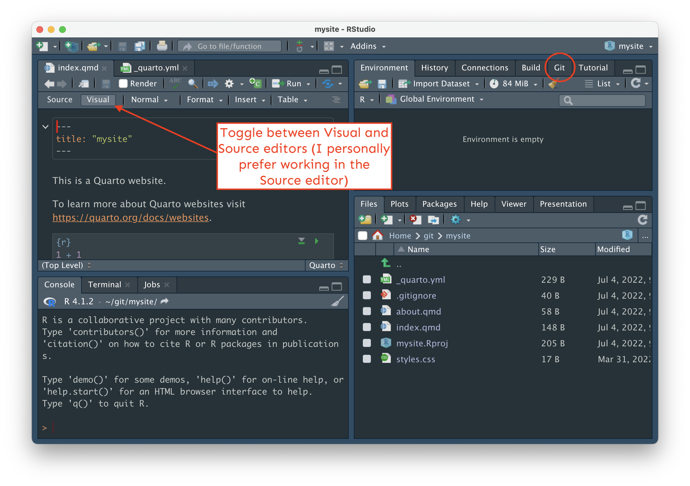
When we initialize our R project, mysite/ (or yourGitHubUsername.github.io/), as a git repository using git init (or a wrapper function, such as usethis::use_git()), a hidden .git/ folder is created within that project folder. This hidden .git/ folder is the git repository. As you use git commands (or RStudio’s GUI buttons) to capture versions or “snapshots” of your work, those versions (and their associated metadata) get stored within the .git/ folder. This allows you to access and / or recover any previous versions of your work. If you delete .git/, you delete your project’s history. Here is an example website repository, represented visually:
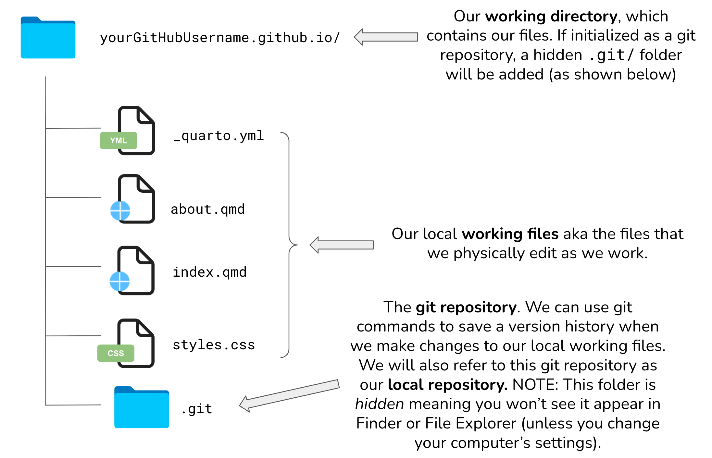
Click on the Git tab in the top right pane of RStudio. Next to the
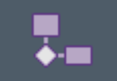
symbol, you should see a dropdown menu that displays the name of your current branch.Open RStudio’s Terminal window (next to the Console) and run either git branch (this prints all local branches and highlights the one that you’re currently on) or git status (the first printed line should say On branch <branch_name>).
master, update the name to main. (If your branch is named main, you’re good to go! You can skip this step.) To update your default branch name, run the following in your Console:Console
usethis::git_default_branch_rename(from = "master", to = "main")Confirm that your branch name was updated to main by running git branch or git status in your Terminal. The above function only updates your default branch name for this respository. You’ll also want to update your git config file so that the default branch name of any future local git repository is automatically named main. To do so, run:
Console
usethis::use_git_config(init.defaultBranch = "main")This includes things like setting your user.name and user.email, which are used to identify the author of commits (you may have done this recently as part of the initial setup prior to this workshop). It’s also a place for us to permenently set the name of our default branch for all future git repositories. You can view the contents of your entire git config file by running the following command in your Terminal:
Terminal
git config --listThere is a push across platforms and software to update this historical default branch name from master to main. GitHub has already done so – creating a remote repository first results in a default branch named main. Depending on your version of Git and / or your configuration settings, however, you may need to update the name manually when creating a local git repository first (as we’re doing here).
Console
usethis::use_github()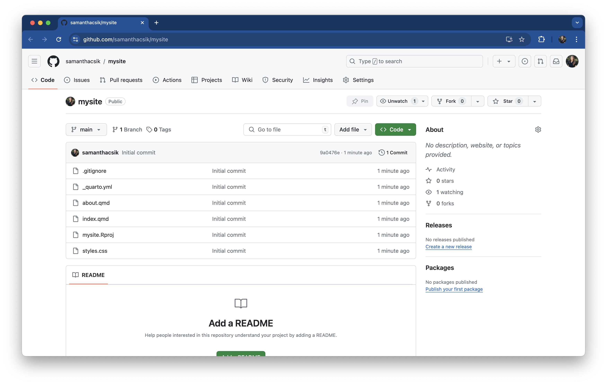
usethis::use_github() your browser window should open up to your new GitHub repository and look similar to the browser above.Git is a version control software designed to manage the versioning and tracking of source code files and project history. It operates locally on your computer, allowing you to create repositories and track changes. It works directly with files on your computer, and is primarily used through a command line interface (e.g. Terminal, Git Bash). Some GUIs (Graphical User Interfaces), like RStudio, provide user-friendly buttons to execute git commands as well.
GitHub is a cloud-based hosting service that allows you to manage Git repositories – as Jenny Bryan describes in her book Happy Git and GitHub for the useR, hosting services like GitHub “provide a home for your Git-based projects on the internet.” GitHub provides us with the tools for storing, managing, and collaborating on git repositories. It also offers additional features on top of Git, like issue tracking, project management tools, code review, pull requests, and more.
The illustration below depicts how we use Git and GitHub together to version control our work locally (e.g. on our computer(s)), and send versions to and receive updates from a remote (i.e. GitHub) repository.

Illustration by Allison Horst
There are a lots of options to publish your website. We’ll use the GitHub Pages option, which allows you to publish a website from any GitHub repository (for free!). To do so, there are a few configuration steps:
.nojekyll in your repository’s root directory (e.g. mysite/), which is required to disable some processing of HTML files that GitHub does by default. From RStudio’s Files pane, click New Blank File > Text File, then type .nojekyll > click OK (you can use the Text File option to create any file type)..nojekyll files may (or may not, depending on your IDE) visibly appear in your directory
.nojekyll is a hidden file which may not visibly appear in your directory (e.g. if using RStudio). Regardless, you should see it show up as a file to track with git (e.g. under the Git tab in RStudio, or when you run git status in the command line). You can also view hidden files in Finder (Mac) using the keyboard shortcut Cmd + Shift + ., or follow these instructions for Windows 10 and 11.
output-dir in your _quarto.yml file to docs. The output-dir is the directory (i.e. folder) where your rendered .html (and other important) files will automatically be saved to when you “Build” your website (see the next step!):_quarto.yml
project:
type: website
output-dir: docs
# ~ additional metadata excluded for brevity ~_site/ if it exists and if you’re publishing with GitHub Pages
If you previewed or built your site before setting output-dir to docs in _quarto.yml, you’ll notice a _site/ directory inside your repository – this is the default output directory name. Because GitHub Pages will expect a docs/ folder to deploy from, you can delete _site/ altogether (and push your deletion, if you’ve already committed / pushed _site/ to GitHub).
From the Files pane, check the box next to _site > click the Delete button
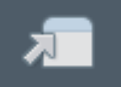
button to open your file in your web browser. Note: your website is currently being hosted by your local machine, not at a searchable URL. We’ll get there soon though!Clicking Render Website in the Build tab (or running quarto render in the Terminal) is a necessary pre-deployment (and redeployment) step – it converts all .qmd files to .html and ensures that all website components are stitched together correctly. If you do not render your website before pushing your files, your changes will not deploy.
Note: Previewing your website is different than rendering your website. Previewing alone does not formally prepare all of your website files for deployment.
git add . in the Terminal (or stage files individually by running git add file-name)git commit -m "my commit message" in the Terminalgit push in the Terminalmain and that the selected folder is set to /docs. Click Save. Once deployed (this may take a few minutes), your website’s URL will appear inside a box at the top of the page (you may have to try refreshing a few times).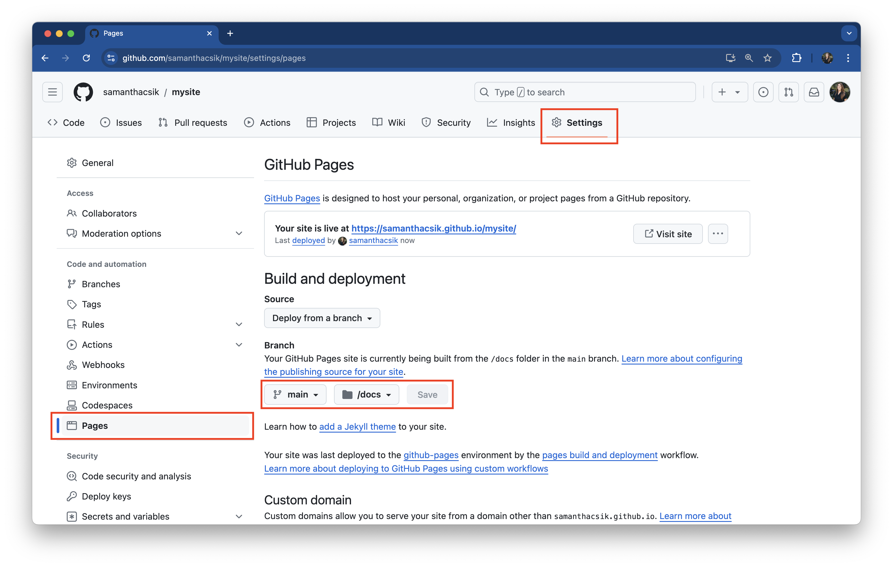
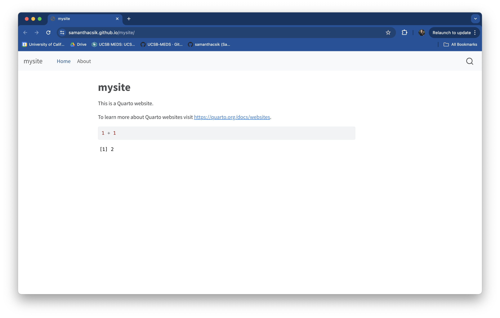
See deployment status, time of each deployment, and how long it took to deploy each run. You can also find failed deployments here (yes, it does happen on occasion) and take action on fixing them.
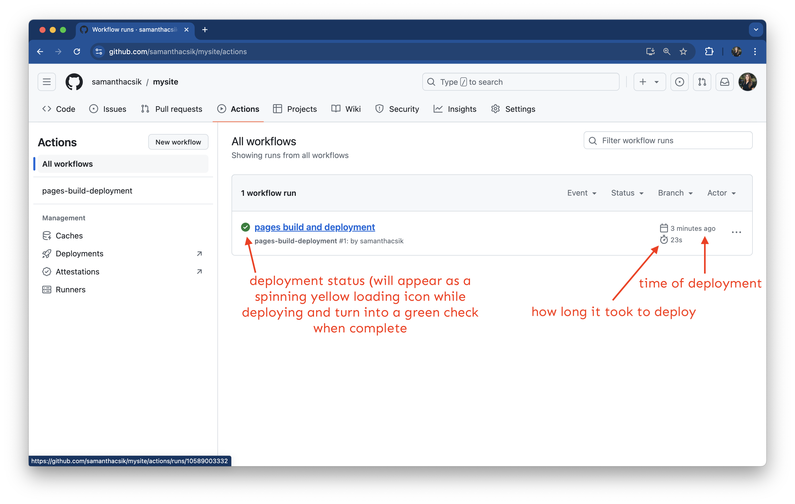
Our webiste might be deployed, but it’s not so personalized. Let’s work on making those important updates. Remember to spin up a preview (run quarto preview in the Terminal) to see your changes as we iterate.
docs/
When you render your site, Quarto takes all your .qmd files, converts them to .html files (along with some other important stuff), and saves everything to your docs/ folder. Your site now deploys from this folder, so you really don’t want to mess with anything in here directly. Instead, make changes to your .qmd (and supporting, e.g. _quarto.yml) files, then rerender your site.
index.qmd). index.html (which is built from index.qmd) is the page people will arrive at when navigating to your website – give this landing / home page a makeover by trying out some of the following:Update the YAML title in your index.qmd file. Here, I changed mine from "mysite" to my name, "Samantha Shanny-Csik"
Delete the sample text and begin adding your own content – a great place to start is a short blurb introducing yourself!
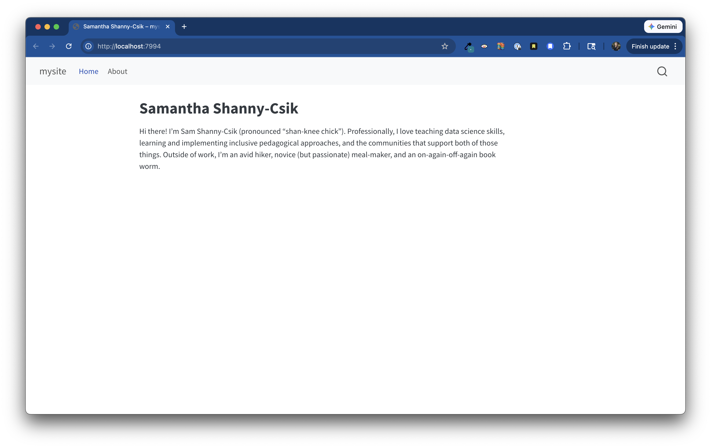
index.qmd
This is the default / expected name given to website landing / home pages. If you change the name of this file, you risk breaking your deployment.
index.qmd) using a pre-built template When the about option is added to a document’s YAML, a special template will be used to layout the content of that page. Choose from one of Quarto’s five built-in templates, each with a slightly different layout style. Some YAML options to play around with:template: choose from Quarto’s built-in template options
image (note that this is a document-level option i.e. is not a sub-item of about): supply it the file path to your photo
image-width & image-shape: adjust your image’s size and shape (round, rounded, rectangle)
links: add buttons with links to your social media pages
index.qmd
---
title: "Samantha Shanny-Csik"
1image: images/headshot.jpeg
2toc: false
about:
3 template: jolla
4 image-shape: round
image-width: 17em
5 links:
- text: LinkedIn
href: https://www.linkedin.com/in/samanthacsik/
- text: GitHub
href: https://github.com/samanthacsik
- text: Email
href: mailto:scsik@ucsb.edu
---
# page content excluded for brevity ~headshot.jpeg lives in a folder called media/)
toc: false
jolla) to update the layout of your landing page (or any page!)
round, rounded, rectangle) & size
mailto: that must precede of your email address, mailto:youremail.com)
Fun Tip: Install the Font Awesome Extension for Quarto to add free Font Awesome icons to your site! Be sure to check out the icon option when adding linked buttons to your About Page.
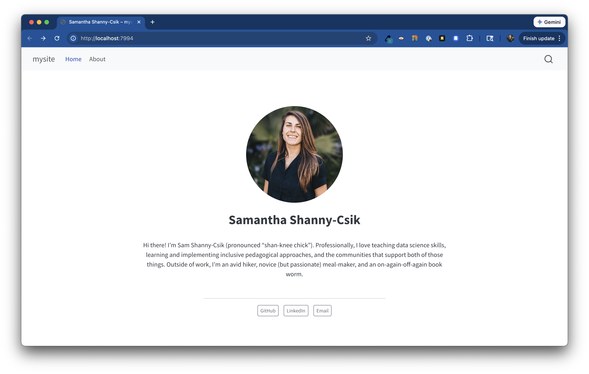
jolla template, adding an image, and linked buttons. Overall, a big improvement! However, our text is a bit squished in the center of the page – we’ll fix then in the next step._quarto.yml The _quarto.yml file is a configuration file – any document rendered within the project directory will automatically inherit the metadata defined within this file. Some easy updates that make a big difference:_quarto.yml
toc: true here (in _quarto.yml) renders a navigation menu on all web pages by default (but you can override options on a page-by-page basis)
page-layout to full so that your page content takes up more of the page width

page-layout set to full, so that content doesn’t appear as squished in the middle of the page.title on index.qmd
Going for a more minimalist look? You can comment out (or remove) the title option from index.qmd.
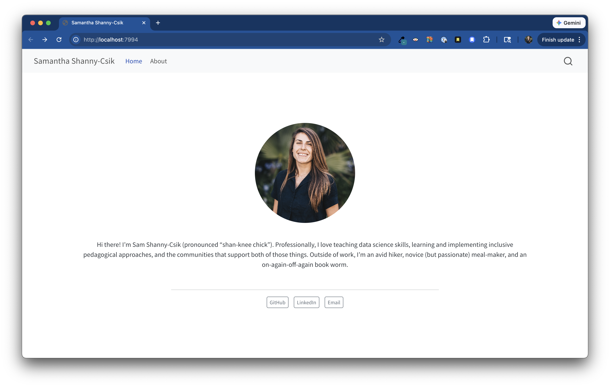
.html files (index.html and about.html) and are automatically rendered when when you Build to docs/. Adding a new page to your website requires two steps:.qmd file and add any necessary YAML options, along with any content that you want to appear on that page. Here, I’m creating a new page titled “All of my favorite resources!” and saved it to my root directory as resources.qmd.resources.qmd
---
title: "All my favorite resources!"
---_quarto.yml by adding your new .qmd to the list of navbar pages. My website’s _quarto.yml file now looks like this:_quarto.yml
project:
type: website
output-dir: docs
website:
title: "Sam Csik"
navbar:
left:
- href: index.qmd
text: Home
- about.qmd
1 - resources.qmd
format:
html:
theme: cosmo
css: styles.csstitle field of that file’s YAML. For example, I have set title: "All my favorite resources!" in the YAML of resources.qmd – this is how it will appear in my website’s navbar. If you’d like to set the navbar name as something other than the page’s title, use the href and text options together (e.g. see how index.qmd is rendered as Home in my website’s navbar).
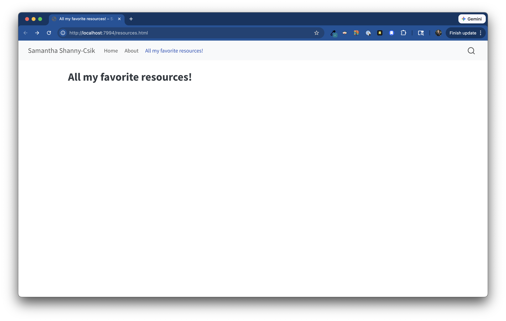
href and text options together in _quarto.yml)Your website is a great place to showcase your work, ideas, and writing in the form a blog. Let’s add one!
blog/ (though the name is up to you).qmd file that you’ll add to your website’s navbar by including it in _quarto.ymlWe’ll create these in the following steps.
Create a blog/ folder. Jump to your repo’s root directory and click on the new folder button in the Files pane. I’ll name mine blog/, though the name is up to you (keep in mind that this folder name will appear as part of your eventual blog post’s URL)
Create a listing page (i.e. a web page with content that is automatically generated from a list of documents – in this case, that would be a list of blog posts). Your listing page takes the form of a .qmd file that lives in your repository’s root directory (I’ll be calling mine blog.qmd and giving it the title “Blog” for demonstration purposes, though you can choose whatever file name and title you’d like).
Configure your listing page. Specify how you’d like your listing page to be arranged by updating the YAML section of blog.qmd. There are a variety of options that you can specify. Below are a few to get you started.
blog.qmd
---
title: "Blog"
listing:
contents: blog # this name must match the name of the folder you created in step #1; here, all Quarto docs in the `posts` directory will be included on your listing page
type: grid # or `default` or `table`; each type has its own set of yaml options to include
sort: "date desc" # can also sort on more than one field
categories: true # allows you to sort posts by assigned categories
---_quarto.yml with your new listing page to add it to your site’s navbar:_quarto.yml
# ~ parts of `_quarto.yml` omitted for brevity ~
website:
navbar:
title: myWebsiteTitle
right:
- href: index.qmd
text: Home
- about.qmd
- href: resources.qmd
text: Resources
- blog.qmd # add your listing page file to your navbar, just like you would any other new web page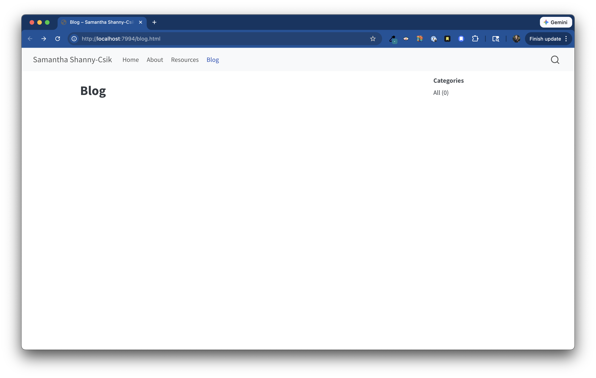
Create a folder inside blog/ to house your blog post. This folder name will become the slug for your published post, so name it something relevant, like a short description of what your blog post is about (make sure to separate words with hyphens or underscores, e.g. my-first-post).
Create an index.qmd file inside your new folder. Your file path should look something like this: mysite/blog/my-first-post/index.qmd. This file is your blog post. Write all your content here!
index.qmd?
This is mostly important for maintaining short, clean URLs.
Let’s take this very blog post for example. The content that you’re reading right now is written to the file, samanthacsik.github.io/posts/2022-10-24-quarto-blogs/index.qmd (you can check it out on GitHub), and the resulting URL is https://samanthacsik.github.io/posts/2022-10-24-quarto-blogs/.
If I named my blog post file something like, my-blog-post.qmd (rather than index.qmd), the resulting URL would instead look like, https://samanthacsik.github.io/posts/2022-10-24-quarto-blogs/my-blog-post.html. This isn’t necessarily wrong, but it does result in a lengthier URL – and short URLs tend to be easier to remember.
index.qmd. Here are my go-to options:blog/my-first-post/index.qmd
---
1title: "blog post title"
description: "blog post description (appears underneath the title in smaller text) which is included on the listing page"
2author:
- name: Samantha Shanny-Csik
url: https://samanthacsik.github.io/
orcid: 0000-0002-5300-3075
affiliation: R-Ladies Santa Barbara
affiliation-url: https://www.meetup.com/rladies-santa-barbara/
date: 05-13-2026
3categories: [Quarto, R, R-Ladies]
4citation:
url: https://samanthacsik.github.io/blog/my-first-post/
5image: preview-image.png
6draft: false
---
Here is where I will start writing my actual blog post content...mysite/blog/my-first-post/preview-image.png).
draft: true while you’re still working on your blog post to prevent it from showing up on your listing page, site map, or site search (it will still be available at a searchable URL). When you’re ready to publish, just remove draft: true from your YAML (or set to false), then render your post. Quarto v1.5.56 introduced draft banners, which will appear on any draft posts. You can also control how drafts are linked / rendered on your website using the draft-mode option. By default, any page set as a draft will not be linked or searchable. If you want your draft to still be searchable at it’s URL (helpful if you want to share a draft with someone, but don’t want it showing up on your listing page just yet), consider setting draft-mode to either unlinked or visible – check out the documentation for more information.
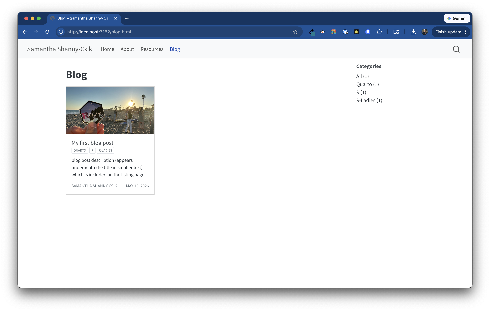
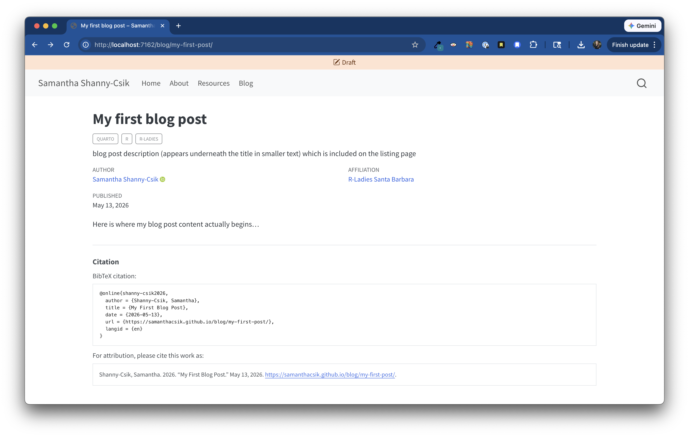
draft is set to false.Congrats on creating your first blog post! When you’re ready to add another, repeat the steps above.
We’ve come a long way, but our website could still use a bit more pizazz with a theme that reflects our own personality and style. There are a number of ways to update a Quarto website’s theme (e.g. colors, fonts). The (arguably) fastest and easiest way to get started is by defining some Sass variables in a .scss file (stylesheet), then linking to that stylesheet in your _quarto.yml metadata. The steps below offer a “quick start guide approach,” though I recommend checking out these workshop materials on customizing Quarto websites using Sass & CSS for a much more thorough / deeper dive.
.scss stylesheetCreate a styles.scss file in your repo’s root directory (you can name it however you’d like), using the command touch styles.scss in the Terminal, or by Blank File > Text File > typing styles.scss from the RStudio Files pane.
Add the /*-- scss:defaults --*/ region decorator to the top of styles.scss (required by Quarto) – you’ll write all your Sass variables underneath this:
styles.scss
/*-- scss:defaults --*/styles.scss stylesheet to your website using the theme option in _quarto.yml:_quarto.yml
project:
# ~ additional YAML omitted for brevity ~
website:
# ~ additional YAML omitted for brevity ~
format:
html:
1 theme: styles.scss
toc: false
page-layout: fullstyles.scss stylesheet using the theme option
css: styles.css from _quarto.yml
This tutorial doesn’t cover writing CSS, though you can (and should) write any CSS in your .scss file (rather than writing it in a separate .css file). I recommend removing styles.css from _quarto.yml. You can also delete styles.css from your repo (you can always create a new one if you decide you want / need a .css file in the future).
$variable-name: value; (you get to decide what these variable names are!). Here, we define three colors:styles.scss
// Colors
$baby-blue: #E3F1F2;
$dark-blue: #252D5C;
$orange: #F26C25;// for single line comments in .scss files
You may also create multi-line comments, which start with /* and end at the next */.
styles.scss
/*-- scss:defaults --*/
// Colors
$baby-blue: #E3F1F2;
$dark-blue: #252D5C;
$orange: #F26C25;
// Sass vars
$body-bg: $baby-blue;
$body-color: $dark-blue;
$link-color: $orange;
$footer-bg: $dark-blue;[SCREENSHOT HERE]
Your newly styled site should look similar to this (be sure to run quarto preview in the Terminal, if it’s not already running).
<style> </style> tags (starting with @import and ending with ;) to your clipboard.[SCREENSHOT HERE]
styles.scss (I always place this at the top of my stylesheet, beneath /*-- scss:defaults --*/):styles.scss
/*-- scss:defaults --*/
// Import Google fonts
@import url('https://fonts.googleapis.com/css2?family=Nunito:ital,wght@0,200..1000;1,200..1000&display=swap');
// Colors
$baby-blue: #E3F1F2;
$dark-blue: #252D5C;
$orange: #F26C25;
// Sass vars
$body-bg: $baby-blue;
$body-color: $dark-blue;
$link-color: $orange;
$footer-bg: $dark-blue;mainfont option in _quarto.yml – this is the easiest way to use a single font across your entire website:project:
# ~ additional YAML omitted for brevity ~
website:
# ~ additional YAML omitted for brevity ~
format:
html:
theme: styles.scss
toc: false
page-layout: full
1 mainfont: Nunito[SCREENSHOT HERE]
Our updated website, with Nunito applied.
But this requires a bit more Sass and CSS. While we won’t get into that here, check out these workshop materials and some “in the wild” examples (e.g. like the stylesheet for this very instructional document ).
GitHub Pages will then rebuild and redeploy your site at your URL.
We’ve made lots of great changes, and now we need to publish them. Thankfully, this is fairly straightforward:
Render your website. You can do this by either navigating to the Build tab in RStudio and clicking the Render Website button, or running render quarto in your Terminal. This converts all .qmd files to .html and ensures that all website components are stitched together correctly. If you do not render your website before pushing your files, your changes will not deploy.
Push your files to GitHub. You can do so using the RStudio GUI buttons in the Git tab or via the Terminal.
Voila! Keep an eye on the GitHub Actions tab to see when your redeployed website is ready to view.
Despite not practicing it here today, I almost always work on a branch when making changes to my website – this way I can safely test changes before deploying them to my live site. To create a branch:
Check that you’re on main by typing git branch into the RStudio Terminal. If you’re not on main, you can switch by running git checkout main.
Create a local git branch from main by running the following in your Terminal:
Command line / Terminal
git checkout -b my-new-branchCommand line / Terminal
git push -u origin my-new-branchYou’re now ready to work as normal! Once satisfied with your changes, you can git add, git commit -m "my commit message", and git push (or use the RStudio GUI buttons in the Git tab) your files. Open a pull request from GitHub and merge into main to integrate your changes (this step is important! Your site will not redeploy until your changes have been merged from your branch into main).